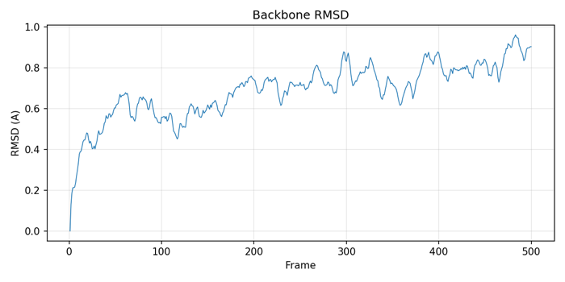
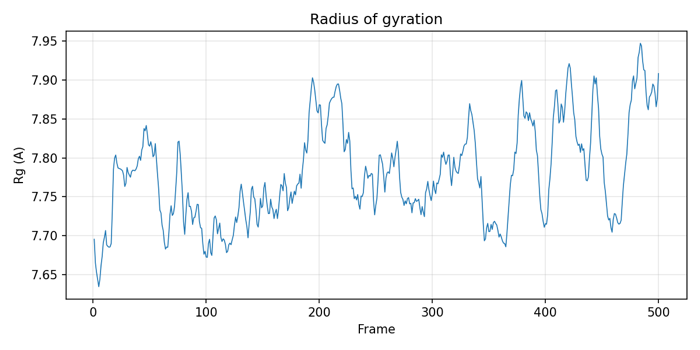

min1pass
minimization · ntr 1wall 9 s&cntrl imin=0, irest=1, ntx=5, nstlim=10000, dt=0.002, ntc=2, ntf=2, cut=9.0, ntb=2, ntp=1, barostat=2, ntt=3, gamma_ln=2.0, ig=-1, temp0=300.0, ntr=0, iwrap=1, ioutfm=1, ntpr=500, ntwx=20, ntwr=5000 /

